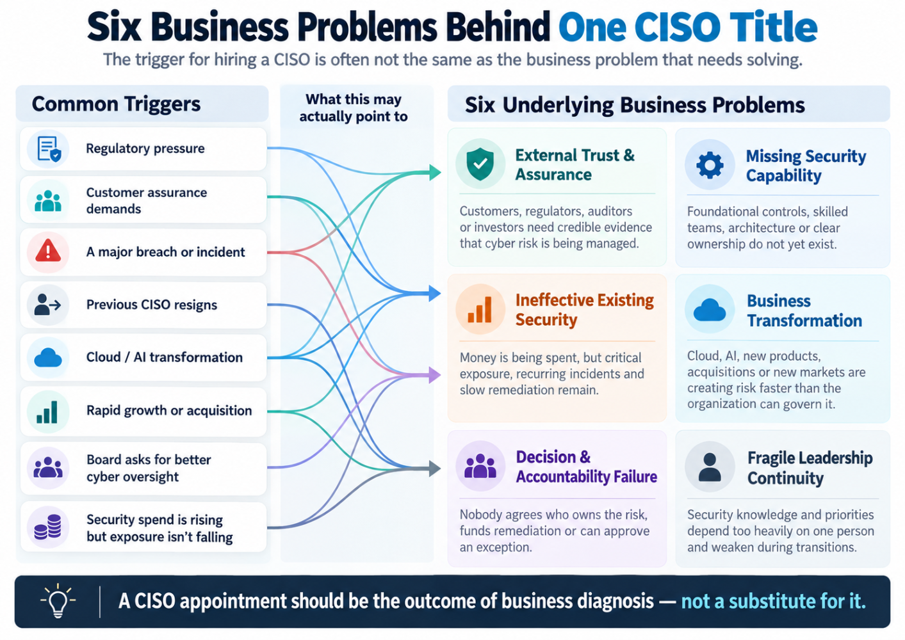
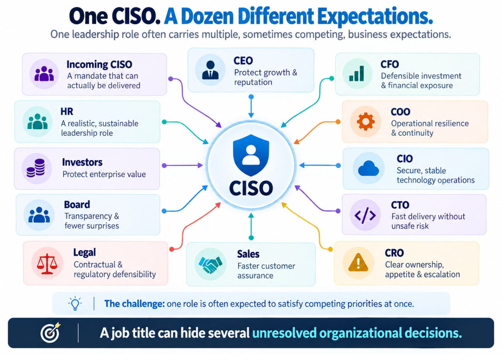
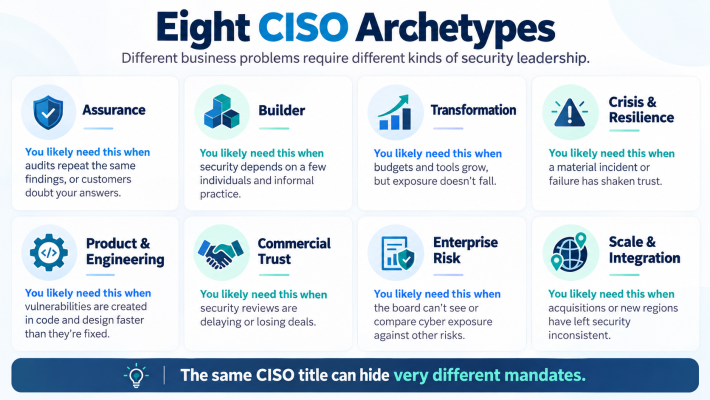
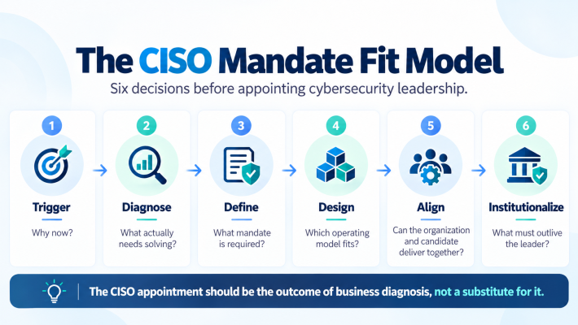

Same title. Different business problems. And sometimes, a mandate that was never designed to succeed.
A new CISO joins an organization.
The board is optimistic. There's a fresh roadmap, new investment and a sense that security is finally receiving the attention it deserves.
A year or two later—or perhaps longer—the CISO leaves.
A successor arrives. Another assessment begins. Another strategy is developed.
Some projects are paused. Others are renamed, replaced or quietly cancelled.
And the organization begins another cycle.
But here's a question leadership teams should be asking:
Did the business risk actually change, or only the person describing it?
A recent LinkedIn post by Vincent van Dijk MSc raised an important point: cybersecurity should not depend on who occupies the CISO chair. A good security program should survive leadership changes.
I agree.
But his observation pushed my thinking further, toward a question that comes before tenure, turnover or strategy resets.
Why did the organization hire a CISO in the first place?
A regulator? A customer questionnaire? A serious breach? An engineering problem? A board demanding better oversight? The resignation of the previous CISO?
Each is a legitimate reason to start the conversation.
None, by itself, defines the job.
1. The Trigger Is Not the Problem
A growing SaaS company is about to sign its largest enterprise customer.
The customer asks for security certifications, assurance evidence and a named security executive.
Sales escalates. The CEO says, "We need a CISO."
Perhaps.
But is the actual gap an executive title—or immature security controls, weak product security and assurance claims that cannot withstand scrutiny?
Now consider a bank receiving supervisory findings involving technology risk and operational resilience.
The board wants stronger security leadership.
But what if those findings reflect years of deferred remediation, fragmented ownership, aging technology and recovery plans never tested end to end?
A compliance-focused CISO may help establish stronger oversight. Yet the operational problems will remain unless the business also addresses the decisions that created them.
Or consider a company recovering from a serious breach.
The CISO departs. A replacement is expected to restore confidence.
But the vulnerabilities, unfunded projects and repeatedly renewed risk exceptions behind the incident may have been documented—and accepted—for years.
What exactly is the new CISO expected to fix?
In each scenario, leadership risks moving directly from recognizing a problem to hiring a person, skipping the diagnosis in between.
The CISO appointment should be the outcome of business diagnosis, not a substitute for it.
2. Six Business Problems Hiding Behind One Title
Strip away the immediate triggers, and many cybersecurity leadership requirements can be grouped into six underlying business problems.

1. External Trust and Assurance
Customers, regulators, auditors, insurers and investors need credible evidence that cybersecurity risks are understood and managed.
The problem isn't necessarily missing documentation. It may be weak underlying controls or an inability to demonstrate their effectiveness.
2. Missing Security Capability
Foundational controls, skilled teams, security architecture, operating processes or clear ownership don't yet exist.
The problem is building a sustainable capability—not expecting one executive to compensate for an entire missing function.
3. Ineffective Existing Security
The organization is spending money, but critical exposure persists. Incidents recur. Remediation stalls. Tools multiply without demonstrable improvement.
The problem may be strategy, execution, architecture, incentives or all four.
4. Business Transformation
Cloud adoption, AI, new digital products, acquisitions and international expansion create risks faster than the organization can govern them.
The challenge is enabling growth while keeping exposure within acceptable boundaries.
5. Decision and Accountability Failure
Nobody agrees who owns a material risk, who funds remediation, who can accept an exception or where unresolved disagreements should be escalated.
This may be a governance problem rather than a shortage of cybersecurity expertise.
6. Fragile Leadership Continuity
Security priorities, decisions and institutional knowledge depend excessively on particular executives.
When the leader changes, projects lose momentum and the reasoning behind previous decisions becomes difficult to reconstruct.
Most organizations face more than one of these problems at a time.
That is precisely why generic CISO job descriptions so often become unrealistic.
They describe everything an ideal security executive might know, rather than the specific problems the organization needs solved.
The better question isn't simply, "Do we need a CISO?"
It's:
"What must cybersecurity leadership make possible that our organization cannot reliably accomplish today?"
3. One CISO. A Dozen Different Expectations.

Even when an organization agrees that cybersecurity needs stronger leadership, its executives may have very different definitions of success.
The CEO wants growth protected.
The CFO wants defensible investment.
The COO wants continuity.
The CIO wants secure, stable operations.
The CTO wants engineering to deliver without unnecessary friction.
The CRO wants cyber exposure reflected in enterprise risk decisions.
Sales wants customer security reviews completed faster.
Legal wants contractual and regulatory obligations addressed.
The board wants transparency and fewer surprises.
Investors want enterprise value protected.
HR wants a realistic leadership position that can attract and retain the right person.
And the incoming CISO wants a mandate they can actually deliver.
All are reasonable expectations.
But without prioritization, they can become an impossible job.
- Be strategic, but personally handle every operational escalation.
- Challenge engineering decisions, but never delay a release.
- Reduce risk, but work within a budget established before the risk was properly assessed.
- Own cybersecurity outcomes, while other executives approve the actions necessary to achieve them.
The problem is not automatically the candidate.
It may be that twelve different expectations have been bundled into one title without resolving the conflicts between them.
4. Good at Solving What?

We spend a great deal of time debating what makes a good CISO.
Technical expertise. Business acumen. Board presence. Regulatory understanding. Communication. Leadership.
All important.
But I would ask something more specific.
Good at solving what?
I find eight leadership archetypes useful when thinking about the different mandates organizations may require.
The Assurance CISO builds credible, repeatable regulatory, contractual and customer assurance.
The Builder CISO establishes the security function, operating model, foundational controls and capabilities.
The Transformation CISO improves an existing security program that consumes resources without delivering sufficient risk reduction.
The Crisis & Resilience CISO stabilizes the organization following material failures and builds tested response and recovery capabilities.
The Product & Engineering CISO embeds security into architecture, software development, cloud platforms and AI-enabled products.
The Commercial Trust CISO helps translate security credibility into customer confidence, executive engagement and informed commercial decisions.
The Enterprise Risk CISO connects cyber exposure to business consequences, investment, risk appetite and board oversight.
The Scale & Integration CISO establishes consistent governance across acquisitions, business units, regions and complex operating structures.
These are working patterns, not formal industry classifications. They overlap, and experienced CISOs often combine several.
Assurance and Commercial Trust, for example, share important foundations but may have different primary stakeholders and outcomes.
Now imagine three finalists for a CISO position.
One has deep regulatory and audit experience.
Another has built security engineering capabilities across hundreds of applications.
A third has led significant cyber incidents and operational resilience programs.
All three could be excellent executives.
But they are not automatically interchangeable.
A software company struggling with insecure engineering practices may need very different leadership from a financial institution undergoing regulatory remediation.
The most impressive candidate isn't necessarily the best-equipped leader for your particular problem.
And organizational requirements evolve.
The Builder who established security foundations three years ago may now face an organization whose needs center on international scale, enterprise risk or transformation.
That does not automatically mean the original appointment failed.
It means the mandate should be reassessed deliberately as the business changes.
5. Five Ways to Structure Security Leadership—and What Each Costs You
Before recruiting, organizations face another decision.
What security leadership operating model actually fits the business?
There isn't one universally correct answer.
Option 1: Dedicated Full-Time CISO
Appropriate where business exposure, operational complexity, executive workload or applicable regulations justify dedicated leadership.
The danger is creating an impressive title without sufficient resources, decision rights or executive access.
Option 2: Fractional or Virtual CISO
Can be proportionate for organizations that need senior strategic guidance without continuous full-time executive capacity.
The danger is strategic advice without sufficient operational ownership, execution support or availability during critical events.
Option 3: Combined CIO/CISO or CTO/CISO
May work in less complex organizations where responsibilities, oversight and escalation arrangements are carefully designed.
The danger is asking the same executive to prioritize delivery and independently challenge the risks arising from those decisions.
Option 4: Head of Security with an Executive Sponsor
Can work when the immediate requirement is strong operational and technical leadership rather than a dedicated C-suite appointment.
The danger is insufficient authority, unclear sponsorship or no effective escalation route for material risks.
Option 5: Group CISO with Local Security Leaders
Can work for multinational organizations, business groups and acquisition-driven enterprises.
The danger is imposing central policies that fail to account for local operational and regulatory realities.
Company size alone is a poor guide.
A 50-person organization operating critical financial infrastructure may need more specialized security oversight than a significantly larger business with less consequential technology exposure.
And sometimes the choice is constrained by regulation.
India's RBI IT Governance Directions prescribe designated CISO responsibilities, reporting and support for covered entities. SEBI's Cybersecurity and Cyber Resilience Framework also requires CISO arrangements for relevant regulated entities, with specific conditions affecting group-level and part-time structures.
The EU's Digital Operational Resilience Act requires appropriate independence and segregation for ICT-risk oversight functions in covered financial entities, subject to its provisions and exemptions.
In those environments, "start fractional and grow into it" is not necessarily a permissible answer.
The dual-role discussion also deserves nuance.
A combined CIO/CISO or CTO/CISO role is not automatically a governance failure.
An unmanaged conflict of responsibility is the problem.
When the same executive approves technology delivery and evaluates its security implications, who provides an effective challenge?
That question matters more than whether the organization has created another C-suite title.
6. Accountability Without Authority Is Not a Leadership Strategy
Imagine hiring a CISO with a twelve-month mandate to reduce critical cybersecurity exposure.
The CISO assesses the environment, identifies the priorities and presents a remediation plan.
Engineering controls release schedules.
IT controls operational changes.
Procurement manages vendor decisions.
Finance controls investment.
Business executives determine which risks they are prepared to accept.
Distributed ownership is normal. Cybersecurity is a shared organizational outcome.
But when decision rights are vague, escalation is weak and the CISO is still expected to deliver the result, a structural problem emerges.
I call this the CISO Mandate–Authority Gap.
Accountability has been assigned without sufficiently establishing the means to influence the outcome.
The consequences are not limited to delayed security projects.
Senior security executives also operate under increasing scrutiny of their decisions, reporting and conduct.
Consider two very different US cases.
Former Uber security executive Joseph Sullivan was convicted in 2022 of federal offences involving obstruction and concealment following a data breach.
The SEC's civil case against SolarWinds and its CISO, Timothy Brown, followed a different path. After the court narrowed the claims, the SEC and defendants filed a joint stipulation in November 2025 to dismiss the remaining action with prejudice.
Different facts. Different outcomes.
Neither establishes automatic personal liability whenever a security incident occurs.
But they reinforce why accurate reporting, documented decisions, transparent escalation and clear responsibilities matter.
None of this exempts a CISO from personal performance accountability.
Security executives can fail through poor judgment, weak execution, inadequate communication or ineffective leadership.
But boards should distinguish between two very different situations:
A leader who failed within a workable mandate.
And:
A mandate that was never realistically workable.
Changing the executive may address the first.
It will not, by itself, resolve the second.
7. Why Does the Strategy Restart When the CISO Leaves?
Now return to the discussion that started this article.
A new CISO should question inherited assumptions.
Threats change. Technology evolves. Business priorities shift. Some investments fail to deliver their promised outcomes.
There are legitimate reasons to change a security roadmap.
But the arrival of a new leader is not, by itself, evidence that the previous strategy was wrong.
Consider an organization that approved identity modernization because privileged access represented a material business risk.
The CISO leaves.
The successor prefers another architecture and pauses the project.
That may be a sound technical decision.
But leadership should still be able to answer:
- Did the underlying risk disappear?
- Who approved the delay?
- What controls cover the exposure during transition?
- What evidence supports the replacement approach?
If nobody can answer, the issue goes beyond different leadership preferences.
The organization may never have owned the reasoning behind its security strategy.
The vacancy period makes this especially visible.
Between CISOs, who approves urgent remediation? Who manages risk exceptions? Who escalates significant findings?
If everything waits for the next appointment, critical security decisions have been tied to a position rather than embedded in business governance.
Departing CISOs also have professional responsibilities. A proper handover should preserve unresolved risks, decisions, control obligations and in-flight commitments.
But the organization must ensure accountable owners remain in place to act on that information.
A security roadmap should always be open to challenge. The business risks it addresses should not leave with its author.
8. "Why Not Just Hire a Great CISO and Let Them Figure It Out?"
It's a reasonable objection.
A strong CISO should diagnose the environment, challenge assumptions, shape strategy and propose solutions.
That is an essential part of the role.
But even an exceptional CISO cannot independently authorize decisions beyond the authority delegated to them.
They cannot set the board's risk appetite, commit another executive's budget or accept material business consequences on behalf of accountable business owners simply by virtue of their expertise.
The CISO can lead the diagnosis.
The business must authorize and support the decisions required to act on it.
Which brings us to the actual hiring decision.
9. The CISO Mandate Fit Model

I would approach cybersecurity leadership appointments through six decisions.
1. TRIGGER — Why now?
Identify the event that created the requirement.
Regulation, a customer, an incident, business growth, transformation or a leadership vacancy.
Then recognize that the trigger may not describe the complete problem.
2. DIAGNOSE — What actually needs fixing?
Which business outcomes are exposed?
Is the root cause missing capability, ineffective execution, inadequate investment, poor architecture or unclear ownership?
3. DEFINE — What mandate is required?
Identify the two or three outcomes that matter most over the next twelve months.
Determine which leadership capabilities best align with those outcomes.
4. DESIGN — Which operating model can deliver?
Select the appropriate leadership arrangement.
Establish its independence, decision rights, escalation mechanisms, specialist resources and executive sponsorship.
5. ALIGN — Can the candidate and organization deliver together?
Does the candidate match the primary mandate?
Are responsibilities formally authorized and realistically supported today, rather than dependent on undefined future possibilities?
6. INSTITUTIONALIZE — What must outlive the leader?
Ensure material risks have named business owners.
Preserve decision records, funded priorities, performance evidence and arrangements for leadership transitions.
This is not a new regulatory standard.
It is a practical decision model intended to make an important executive appointment more deliberate.
And it isn't just for CEOs or hiring committees.
A senior security leader considering a CISO opportunity should be conducting their own due diligence.
Four questions are particularly revealing:
Why does this position exist now?
Who currently owns and accepts material cyber risk?
What happened to the previous security roadmap?
Which decisions can I make, challenge or escalate?
The answers may reveal more about the chances of success than the job description ever will.
10. Three Chairs. Three Leadership Questions.
The same CISO appointment looks different depending on where you sit.
If you're the CEO:
Can you describe the CISO's primary mandate in two sentences without naming a certification, technology product or individual?
If not, are you recruiting against a clearly defined business need—or an accumulation of expectations?
If you're on the board:
When a CISO identifies a material risk that a business owner is unwilling to fund, where does the disagreement get resolved?
And do directors have enough cybersecurity understanding to challenge the assumptions and consequences being presented?
Appointing an expert does not eliminate the board's oversight responsibility.
If you're the incoming CISO:
Does the business genuinely want you to change risk outcomes, or primarily to provide assurance that existing decisions are acceptable?
Both mandates can have legitimate elements.
But they are not equivalent.
AI makes these distinctions more urgent.
When an AI agent receives access to customer information, production systems or financial workflows, someone must approve its authority, operating boundaries and acceptable exposure.
The CISO should help assess and govern that decision.
The accountable business leaders must be able to explain and defend it.
This is not simply a cybersecurity technology question.
It is a business accountability question.
Before You Interview Your Next CISO, Interview Your Own Organization.
Ask why you need the role.
Ask what must change in business terms.
Ask which leadership capabilities match the problem.
Ask whether the operating model provides the authority, resources and executive support required for success.
And ask what will remain when that leader eventually leaves.
A new CISO should bring fresh thinking.
They should preserve what works, challenge what doesn't and change what the evidence shows is ineffective.
But no organization should need a new CISO to rediscover why cybersecurity matters.
The CISO appointment should be the outcome of business diagnosis, not a substitute for it.
The real test of a security program isn't how impressive the roadmap looks under the current leader.
It's whether the business understands, owns and sustains the outcomes that matter—whoever occupies the chair.
So before deciding whether you've found the right CISO, ask the harder question:
Have you built an organization in which the right CISO can actually succeed?
I'd be interested in three perspectives:
CEOs and board members: What triggered your last CISO appointment—and was that the actual business problem?
CISOs and security leaders: Which mandate were you hired to deliver, and which outcomes were you ultimately measured against?
CIOs, CTOs and founders: At what point does a combined technology and security leadership role stop being pragmatic and start becoming a governance risk?
References and Further Reading
- Vincent van Dijk MSc — Original LinkedIn discussion on cybersecurity continuity. Inspiration for this article's opening question.
- NIST — Cybersecurity Framework 2.0, particularly GV.RR-01 to GV.RR-03 concerning accountability, authorities and resources.
- NACD and Internet Security Alliance — 2026 Director's Handbook on Cyber-Risk Oversight.
- Reserve Bank of India — Information Technology Governance, Risk, Controls and Assurance Practices Directions, 2023.
- SEBI — Cybersecurity and Cyber Resilience Framework FAQs, June 2025, including CISO governance arrangements.
- European Union — Digital Operational Resilience Act, Regulation (EU) 2022/2554, particularly Article 6.
- US Department of Justice — Former Uber CSO convicted, October 2022.
- US Securities and Exchange Commission — SolarWinds Corporation and Timothy G. Brown, Litigation Release No. 26423, November 20, 2025.